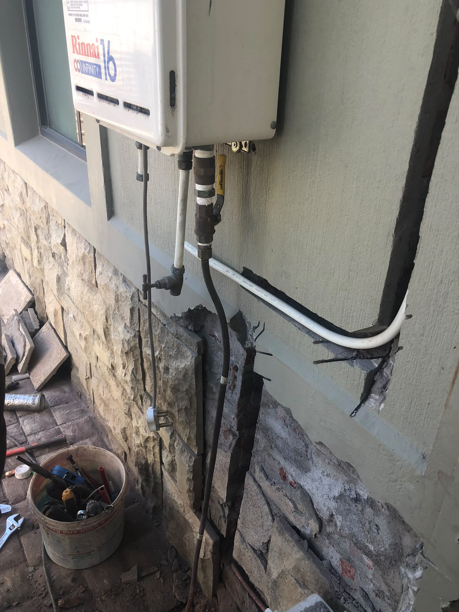

Gas Geyser Installation in Cape Town, COC Included
Gas Geyser Installation Across Cape Town.
A gas geyser runs on LPG, not mains electricity, so it keeps producing hot water through every load shedding stage, from Woodstock and the City Bowl to the Atlantic Seaboard and Southern Suburbs. Red Flame installs gas geysers to SANS 10087, pressure tests the line, and signs the Certificate of Compliance on the same visit. Because the appliance now runs on cylinder gas instead of grid electricity, it also becomes the point where a household starts buying 19kg or 48kg refills regularly, which we supply and deliver from the same Woodstock shop that does the installation.
What a Gas Geyser Installation Involves
Running the gas line from the cylinder or bank to the geyser, fitting the flue for safe exhaust venting, connecting the water inlet and outlet, pressure testing the full system for leaks, and signing the Gas Certificate of Compliance once everything passes. Internal geysers need proper ventilation checked against SANS 10087; external units mounted on an outside wall are the simpler and more common installation in Cape Town.
Which Cylinder Size You Need.
19kg is the minimum for a single-bathroom household running a gas geyser. Larger households, or homes with more than one bathroom, need a 48kg cylinder or a bank of two. We size the setup on the site visit, but as a rule of thumb, bigger than you think.
A single 19kg or 48kg cylinder will run dry, usually mid-shower on the coldest morning of the year. Two cylinders with an auto-changeover valve means the geyser switches to the second bottle automatically when the first runs empty, and you WhatsApp us for a refill on your own schedule instead of an emergency one. Red Flame supplies, installs and refills both sizes from the Woodstock shop, same-day, so the geyser installation and the ongoing gas supply come from one place.
What a Gas Geyser Installation Costs.
From R3,500 for a standard external installation. Larger households, internal ventilation work or longer pipe runs push the price up, typically into the R3,450 to R9,500+ range depending on the site. WhatsApp your property type and bathroom count for an exact quote.
| Service | From (ZAR) | Not Included |
|---|---|---|
| Gas geyser installation | R3,500 | Appliance, cylinders, and cage if required |
| Gas cage supply & fit (for geyser cylinder bank) | R1,450 | Cylinders |
| Certificate of Compliance | R950 | Repairs found on inspection, quoted separately |
Prices exclude the geyser unit itself, cylinders and a gas cage where one is required. Full installation pricing for other appliances is on our gas installation page.
Gas Geysers We Fit in Cape Town.

Gas Geyser Questions Cape Town Customers Ask.
How much does a gas geyser installation cost in Cape Town?
What size gas cylinder does a gas geyser need?
Does a gas geyser work during load shedding?
Do I need a COC for a gas geyser?
How long does a gas geyser installation take?
Need a Gas Geyser Installed in Cape Town?
WhatsApp your suburb, bathroom count and property type. We confirm a site visit and quote before any work starts.